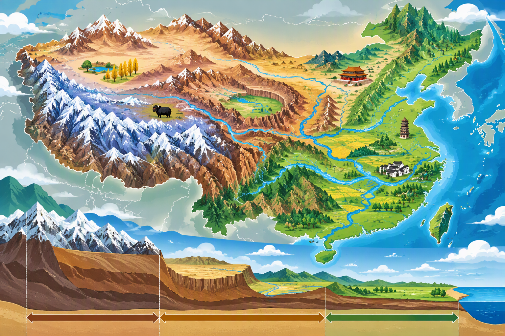

章節導讀
本章要先建立中國西高東低、三級階梯的整體架構，再把高原、盆地、平原與山脈放到正確位置。讀圖時應同時思考地形如何影響河川、人口、交通與產業。
學習方式：先完成課文解說，再做頁面最下方10題。80分以上代表基本掌握。
圖片解說

先看西部高原和高山，再沿河川向東觀察盆地、平原及海岸。下方剖面可幫助理解「西高東低、三級階梯」以及河川多向東流。
西部褐色、白色高山區代表海拔較高。
中部高原與盆地位於第二級階梯。
東部綠色平原較利於人口、農業與交通集中。
看圖技巧：先看整體位置或時間順序，再找圖中的人物、地形、建築或制度線索，最後回到課文概念。
位置與疆域
中國位於亞洲東部、太平洋西岸，南北與東西跨度都很大。跨緯度廣造成南北熱量差異，東臨海洋而西深入內陸，也使水分條件由東向西改變。
三級階梯
第一級以青藏高原為核心；第二級多高原與盆地；第三級多平原與丘陵。整體西高東低，使大型河川多向東流，也讓東部較利於聚落與交通發展。
高原與盆地
青藏高原高寒且冰河廣；黃土高原水土流失嚴重；雲貴高原石灰岩地形發達；內蒙古高原草原廣。塔里木盆地乾燥多沙漠，四川盆地則溼潤多雲霧。
平原與人口
東北、華北及長江中下游平原地勢低平，較利於耕作、交通與都市發展，因此中國人口與大型都市多集中在東部。
山脈與板塊
喜馬拉雅山由印澳板塊與歐亞板塊碰撞形成；大興安嶺分隔內蒙古高原與東北平原；秦嶺是重要南北界線。山脈也會阻擋水氣並增加交通難度。
容易混淆的比較
高原海拔高但頂面可較平坦；平原海拔低且起伏小。
盆地四周較高、中間較低；平原不一定被山地包圍。
地勢是整體高低趨勢；地形是高原、盆地、平原等地表形態。
段考命題提醒
- 地形剖面圖判斷三級階梯
- 景觀照片判斷黃土、青藏或雲貴高原
- 結合河川流向、人口密度與交通建設分析
本章10題理解檢核
尚未開始